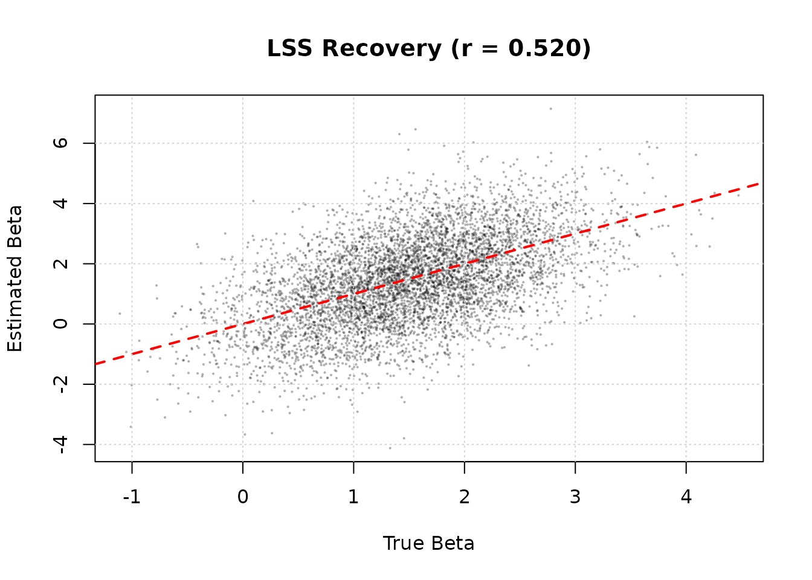

Introduction
The fmridesign package provides a powerful formula-based
interface for creating fMRI design matrices. While fmrilss
has its own design_spec format for the OASIS method, you
can now use event_model and baseline_model
objects directly with the new lss_design() function.
When to Use lss_design()
Use lss_design() when:
- You have multi-condition factorial designs
- You need parametric modulators (e.g., RT, difficulty ratings)
- You want design validation and diagnostic tools
- You prefer formula-based specification
- You need explicit multi-run handling with run-relative onsets
When to Use Traditional lss()
Use the traditional lss() interface when:
- You have simple trial-wise designs already constructed
- You want minimal dependencies
- You’re using internal SBHM pipelines
- You already have design matrices prepared
Simulated Data Setup
To demonstrate the workflow, we’ll create simulated fMRI data with realistic trial effects.
set.seed(123)
# Two runs, 150 scans each, TR = 2s
n_scans_per_run <- 150
n_runs <- 2
n_voxels <- 500
TR <- 2
# True trial effects (betas) for 6 trials per run
true_betas <- matrix(rnorm(12 * n_voxels, mean = 1.5, sd = 0.8),
nrow = 12, ncol = n_voxels)
# Trial data with run-relative onsets
trials <- data.frame(
onset = rep(c(10, 30, 50, 70, 90, 110), times = 2),
run = rep(1:2, each = 6)
)
# Sampling frame
sframe <- sampling_frame(blocklens = rep(n_scans_per_run, n_runs), TR = TR)
# Create design matrix to generate Y
emod_sim <- event_model(
onset ~ trialwise(basis = "spmg1"),
data = trials,
block = ~run,
sampling_frame = sframe
)
# Extract trial design matrix and convert to matrix
X_trial <- as.matrix(design_matrix(emod_sim))
# Baseline: intercept + linear drift per run
bmodel_sim <- baseline_model(
basis = "poly",
degree = 1,
sframe = sframe,
intercept = "runwise"
)
Z_baseline <- as.matrix(design_matrix(bmodel_sim))
# Generate Y with signal + noise
signal <- X_trial %*% true_betas
baseline_signal <- Z_baseline %*% matrix(rnorm(ncol(Z_baseline) * n_voxels, sd = 2),
ncol = n_voxels)
noise <- matrix(rnorm(nrow(X_trial) * n_voxels, sd = 3),
nrow = nrow(X_trial), ncol = n_voxels)
Y <- signal + baseline_signal + noiseQuick Start
Here’s a minimal example using lss_design():
# Use the first run only for quick start
trials_run1 <- trials[trials$run == 1, ]
sframe_run1 <- sampling_frame(blocklens = n_scans_per_run, TR = TR)
Y_run1 <- Y[1:n_scans_per_run, ]
# Build event model with trialwise design
emod <- event_model(
onset ~ trialwise(basis = "spmg1"),
data = trials_run1,
block = ~run,
sampling_frame = sframe_run1
)
# Run LSS
beta <- lss_design(Y_run1, emod, method = "oasis")
# Result: 6 trials × 500 voxels
dim(beta)
#> [1] 6 500
stopifnot(all(dim(beta) == c(6, n_voxels)), all(is.finite(beta)))Multi-Run Experiments
One of the key advantages of lss_design() is automatic
handling of multi-run experiments with proper onset timing.
Onset Convention: Run-Relative
Important: When using fmridesign,
onsets should be run-relative (resetting to 0 at the
start of each run). This is the standard convention for multi-run fMRI
experiments.
# Trial data with run-relative onsets (already defined above)
print(trials)
#> onset run
#> 1 10 1
#> 2 30 1
#> 3 50 1
#> 4 70 1
#> 5 90 1
#> 6 110 1
#> 7 10 2
#> 8 30 2
#> 9 50 2
#> 10 70 2
#> 11 90 2
#> 12 110 2
# Create event model - conversion to global time is automatic
emod_multi <- event_model(
onset ~ trialwise(basis = "spmg1"),
data = trials,
block = ~run,
sampling_frame = sframe
)
# Run LSS
beta_multi <- lss_design(Y, emod_multi, method = "oasis")
# Result: 12 trials × 500 voxels
dim(beta_multi)
#> [1] 12 500Why Run-Relative Onsets?
- Standard convention: Most experiment software (E-Prime, PsychoPy) logs onsets relative to run start
- Easier data management: No manual offset calculations needed
-
Automatic conversion:
fmridesignhandles conversion to global time internally - Less error-prone: Reduces risk of incorrect timing specifications
Adding Baseline Correction
The baseline_model allows you to specify drift
correction, block intercepts, and nuisance regressors in a structured
way.
# Create baseline model with B-spline drift correction
bmodel <- baseline_model(
basis = "bs",
degree = 5,
sframe = sframe,
intercept = "runwise"
)
# LSS with baseline correction
beta_baseline <- lss_design(Y, emod_multi, bmodel, method = "oasis")
dim(beta_baseline)
#> [1] 12 500Adding Motion Parameters
For demonstration, we’ll create synthetic motion regressors.
# Simulate motion parameters (6 motion parameters per run)
motion_run1 <- matrix(rnorm(n_scans_per_run * 6, sd = 0.5),
nrow = n_scans_per_run, ncol = 6)
motion_run2 <- matrix(rnorm(n_scans_per_run * 6, sd = 0.5),
nrow = n_scans_per_run, ncol = 6)
# Create baseline model with motion as nuisance
bmodel_motion <- baseline_model(
basis = "bs",
degree = 5,
sframe = sframe,
intercept = "runwise",
nuisance_list = list(motion_run1, motion_run2)
)
beta_motion <- lss_design(Y, emod_multi, bmodel_motion, method = "oasis")
dim(beta_motion)
#> [1] 12 500
# In real analysis, load motion from files:
motion_run1 <- as.matrix(read.table("motion_run1.txt"))
motion_run2 <- as.matrix(read.table("motion_run2.txt"))
bmodel <- baseline_model(
basis = "bs",
degree = 5,
sframe = sframe,
intercept = "runwise",
nuisance_list = list(motion_run1, motion_run2)
)Multi-Basis HRFs
For multi-basis HRF models (e.g., canonical + temporal + dispersion
derivatives), use nbasis:
# Create event model with SPMG3 (3 basis functions)
emod_3basis <- event_model(
onset ~ trialwise(basis = "spmg3", nbasis = 3),
data = trials,
block = ~run,
sampling_frame = sframe
)
# LSS will auto-detect K = 3
beta_3basis <- lss_design(Y, emod_3basis, method = "oasis")
# Output: (12 trials × 3 basis) × 500 voxels = 36 × 500
dim(beta_3basis)
#> [1] 36 500
# Extract canonical basis estimates (every 3rd row starting at 1)
beta_canonical <- beta_3basis[seq(1, nrow(beta_3basis), by = 3), ]
dim(beta_canonical)
#> [1] 12 500Ridge Regularization
For designs with potential collinearity, use ridge regularization:
beta_ridge <- lss_design(
Y, emod_multi, bmodel,
method = "oasis",
oasis = list(
ridge_mode = "fractional",
ridge_x = 0.02,
ridge_b = 0.02
)
)
dim(beta_ridge)
#> [1] 12 500Comparison with design_spec
Using design_spec (old approach)
# Manual design_spec construction requires global/absolute onsets
# For run-relative onsets (10, 30, 50, 70, 90, 110) in each of 2 runs,
# global onsets would be: 10, 30, 50, 70, 90, 110, 310, 330, 350, 370, 390, 410
# (second run starts at 150 scans × 2s = 300s)
beta_old <- lss(
Y,
method = "oasis",
oasis = list(
design_spec = list(
sframe = sframe,
cond = list(
onsets = c(10, 30, 50, 70, 90, 110, 310, 330, 350, 370, 390, 410),
hrf = HRF_SPMG1,
span = 30
)
)
)
)Limitations: - Requires global/absolute onsets (not run-relative) - No structured baseline handling - No multi-condition support - No parametric modulators - Less validation
Using lss_design() (new approach)
# Formula-based design with run-relative onsets
emod_new <- event_model(
onset ~ trialwise(basis = "spmg1"),
data = trials,
block = ~run,
sampling_frame = sframe
)
bmodel_new <- baseline_model(basis = "bs", degree = 5, sframe = sframe)
beta_new <- lss_design(Y, emod_new, bmodel_new, method = "oasis")Advantages: - Run-relative onsets (standard convention) - Structured baseline (drift + nuisance) - Automatic validation - Richer metadata - Formula-based DSL
Validation: Estimated vs True Betas
Let’s visualize how well LSS recovers the true trial effects from our simulated data.
# Compare estimated betas (with baseline correction) to true betas
# Flatten matrices for plotting
est_vec <- as.vector(beta_baseline)
true_vec <- as.vector(true_betas)
recovery_summary <- data.frame(
Correlation = cor(est_vec, true_vec),
RMSE = sqrt(mean((est_vec - true_vec)^2))
)
recovery_summary
#> Correlation RMSE
#> 1 0.5201957 1.251591
stopifnot(all(is.finite(as.matrix(recovery_summary))))
# Plot
plot(true_vec, est_vec,
pch = 16, cex = 0.3, col = rgb(0, 0, 0, 0.3),
xlab = "True Beta", ylab = "Estimated Beta",
main = sprintf("LSS Recovery (r = %.3f)", recovery_summary$Correlation))
abline(0, 1, col = "red", lwd = 2, lty = 2)
grid()
The fit is not perfect because the simulation adds substantial baseline structure and noise, but the recovered betas still track the ground truth in a way that is easy to diagnose numerically and visually.
Advanced: Parametric Modulators
event_model supports parametric modulators for
trial-by-trial amplitude modulation. This example demonstrates the
syntax but requires special setup.
# Trial data with reaction times
trials_rt <- data.frame(
onset = c(10, 30, 50, 70, 90, 110),
RT = c(0.5, 0.7, 0.6, 0.8, 0.5, 0.9),
run = 1
)
# Center RT
trials_rt$RT_c <- scale(trials_rt$RT, center = TRUE, scale = FALSE)[, 1]
# Model: trial effects + RT modulation
emod_rt <- event_model(
onset ~ trialwise() + hrf(RT_c),
data = trials_rt,
block = ~run,
sampling_frame = sframe
)
# Note: This creates trial-wise regressors PLUS an RT amplitude modulator
# May require special handling in OASIS for proper separationTroubleshooting
Error: “Y has X rows but sampling_frame expects Y scans”
Cause: Mismatch between data dimensions and sampling_frame specification.
Solution: Check that sum(blocklens)
matches nrow(Y):
sframe_check <- sampling_frame(blocklens = c(150, 150), TR = 2)
sum(fmrihrf::blocklens(sframe_check))
#> [1] 300
nrow(Y)
#> [1] 300Error: “event_model and baseline_model have different sampling_frames”
Cause: The two models were created with different
sampling_frame objects.
Solution: Use the same sframe object
for both:
sframe <- sampling_frame(blocklens = c(150, 150), TR = 2)
emod <- event_model(..., sampling_frame = sframe)
bmodel <- baseline_model(..., sframe = sframe)Warning: “High collinearity detected”
Cause: Events are too close together or design is ill-conditioned.
Solution: Use ridge regularization:
beta <- lss_design(
Y, emod, bmodel,
oasis = list(ridge_mode = "fractional", ridge_x = 0.02)
)Summary
The lss_design() function provides a modern,
formula-based interface for LSS analysis that:
- Handles multi-run experiments correctly with run-relative onsets
- Provides structured baseline specification
- Supports multi-basis HRFs with automatic detection
- Validates design compatibility automatically
- Integrates with the fmridesign ecosystem
For simple designs or when you already have design matrices prepared,
the traditional lss() interface remains fully supported and
unchanged.
Further Reading
-
vignette("fmrilss")- Traditional LSS interface -
vignette("oasis_method")- OASIS method details -
vignette("a_04_event_models", package = "fmridesign")- Event model tutorial -
vignette("a_03_baseline_model", package = "fmridesign")- Baseline model tutorial
#> R version 4.5.3 (2026-03-11)
#> Platform: x86_64-pc-linux-gnu
#> Running under: Ubuntu 24.04.4 LTS
#>
#> Matrix products: default
#> BLAS: /usr/lib/x86_64-linux-gnu/openblas-pthread/libblas.so.3
#> LAPACK: /usr/lib/x86_64-linux-gnu/openblas-pthread/libopenblasp-r0.3.26.so; LAPACK version 3.12.0
#>
#> locale:
#> [1] LC_CTYPE=C.UTF-8 LC_NUMERIC=C LC_TIME=C.UTF-8
#> [4] LC_COLLATE=C.UTF-8 LC_MONETARY=C.UTF-8 LC_MESSAGES=C.UTF-8
#> [7] LC_PAPER=C.UTF-8 LC_NAME=C LC_ADDRESS=C
#> [10] LC_TELEPHONE=C LC_MEASUREMENT=C.UTF-8 LC_IDENTIFICATION=C
#>
#> time zone: UTC
#> tzcode source: system (glibc)
#>
#> attached base packages:
#> [1] stats graphics grDevices utils datasets methods base
#>
#> other attached packages:
#> [1] fmrihrf_0.3.0 fmridesign_0.5.0 fmrilss_0.1.0
#>
#> loaded via a namespace (and not attached):
#> [1] plotly_4.12.0 sass_0.4.10 generics_0.1.4
#> [4] tidyr_1.3.2 stringi_1.8.7 lattice_0.22-9
#> [7] bigmemory_4.6.4 digest_0.6.39 magrittr_2.0.5
#> [10] evaluate_1.0.5 grid_4.5.3 RColorBrewer_1.1-3
#> [13] fastmap_1.2.0 jsonlite_2.0.0 Matrix_1.7-4
#> [16] httr_1.4.8 bigmemory.sri_0.1.8 purrr_1.2.2
#> [19] viridisLite_0.4.3 scales_1.4.0 albersdown_1.0.0
#> [22] numDeriv_2016.8-1.1 lazyeval_0.2.3 textshaping_1.0.5
#> [25] jquerylib_0.1.4 cli_3.6.6 rlang_1.2.0
#> [28] fmriAR_0.3.1 splines_4.5.3 cachem_1.1.0
#> [31] yaml_2.3.12 otel_0.2.0 tools_4.5.3
#> [34] uuid_1.2-2 memoise_2.0.1 dplyr_1.2.1
#> [37] ggplot2_4.0.2 assertthat_0.2.1 vctrs_0.7.2
#> [40] R6_2.6.1 lifecycle_1.0.5 stringr_1.6.0
#> [43] fs_2.0.1 htmlwidgets_1.6.4 ragg_1.5.2
#> [46] pkgconfig_2.0.3 desc_1.4.3 pkgdown_2.2.0
#> [49] pillar_1.11.1 bslib_0.10.0 gtable_0.3.6
#> [52] glue_1.8.0 data.table_1.18.2.1 Rcpp_1.1.1
#> [55] systemfonts_1.3.2 xfun_0.57 tibble_3.3.1
#> [58] tidyselect_1.2.1 knitr_1.51 farver_2.1.2
#> [61] htmltools_0.5.9 rmarkdown_2.31 compiler_4.5.3
#> [64] S7_0.2.1